Pakit
Role: UX Researcher, Designer, Product Manager
Timeline: 6 months. 2016-17
Pakit is a startup cofounded by me and Kuldeep Parewa.It is an online delivery and courier service making use of the peer-to-peer market.
I designed the MVP android app and the website along with Vidushi Pundir.
The Problem
The current solution for sending and receiving couriers is through the courier services, which are very expensive and time consuming. Courier services are especially unreliable for perishable edibles and valuable goods. Especially, no prevailing solution for getting food items delivered from other cities was the trigger point for Kuldeep.
One other problem is the huge amout of money passengers have to pay at airports for carryign extra luggage. Although, this was not a primary problem, we found a way to solve this problem too together with the forementioned problem.
Our Solution
Kuldeep came up with the idea of utilising the unused baggage space of people travelling light. People who travel light can earn quick bucks by renting their baggage space. The only problem was that there was no medium for such people to do so. That is where we stepped in. Pakit was conceived to be a an online platform for people who wish to receive couriers fast and people who wish to earn some money by renting their baggage space.
The Team
As soon as we were convinced that this idea had potential, we set on to hire people. We hired two developers, one looking after the front-end part and the other maintaining the back-end code. We also hired a guy to look after the business development part, and Vidushi to look at the design, alongwith me. Kuldeep was the CEO, and was going to look at all the aspects.
The Design
We had decided from the very inception of Pakit, that we would follow a user-centric design process all along the way, and users would be our first priority whenever takign a decision. I, alongwith Vidushi charted a plan for the design. We were going to start with a primary research and then go all the way to mocking up the final designs.
We decided on the following steps.
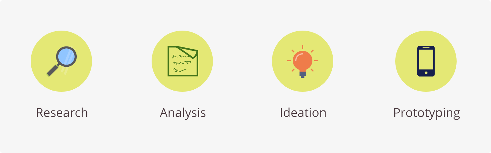User Research
The primary goal of user research was to get to know how people deal with the current solutions, what all goes in their heads while sending and receiving couriers, and also to validate our idea. We wished our solution to match the conceptual models of our users, and hence it was imperative to have a clear idea of how things worked presently.
For the user research, we developed a basic questionnaire and went on to the field to meet people. We interviewed around 12 people, most of them students of our college. We tried to keep the conversations very casual, and made sure that the interviewees didn't feel intimidated at any point of time.
The questionnaire included questions like how often people have paid for the extra baggage they carried, and if they would be comfortable carrying things for strangers. The full questionnaire can be found here.
Insights
We came back with the audio recordings of the interviews, and transcribed the answers on Google Sheets. There was a lot of data, and there was an immediate requirement to sort and analyze it, therefore we decided to do an affinity analysis of the data.
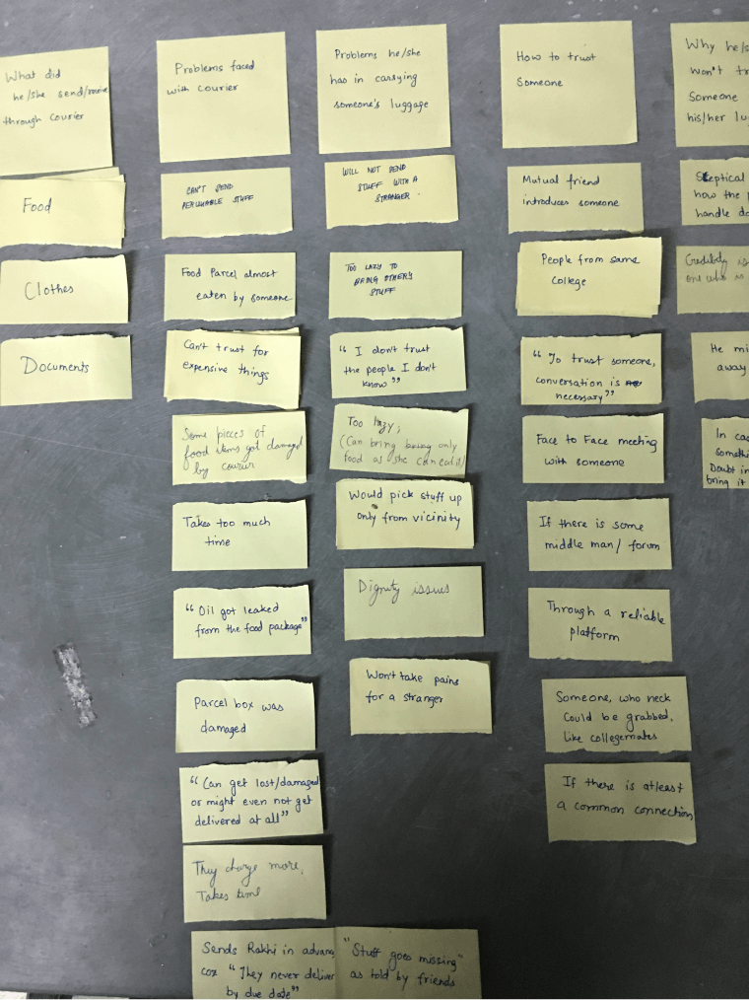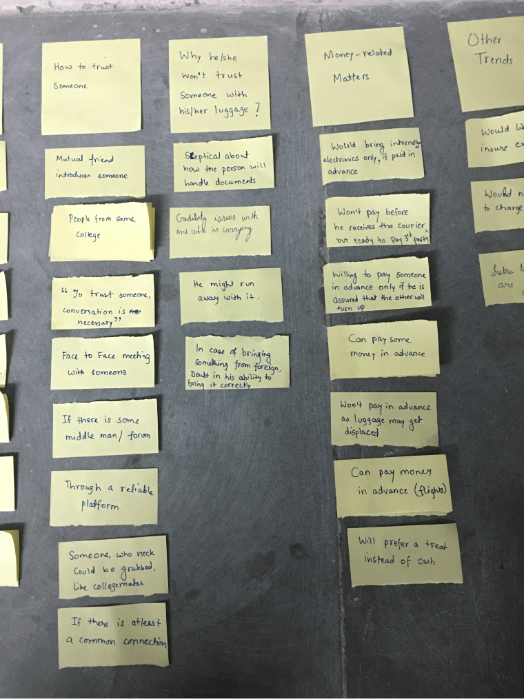
We came back with the audio recordings of the interviews, and transcribed the answers on Google Sheets. There was a lot of data, and there was an immediate requirement to sort and analyze it, therefore we decided to do an affinity analysis of the data.
Persona
We needed a persona, so that we always had access to the characteristics of our target users. We used the interviews as reference to create an average personality to represent all our target users.
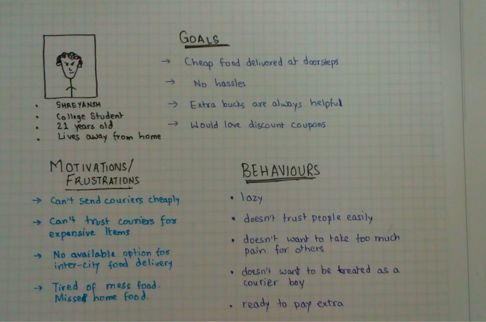The persona acted as our go-to everytime we got stuck, and everytime we knew there could be a better and more user-friendly solution.
User Journey
Before starting the wireframing and visual design process, we decided to sketch out a basic user journey to get the conepts out on paper, and to get a bird's eye view on the information architetcure.
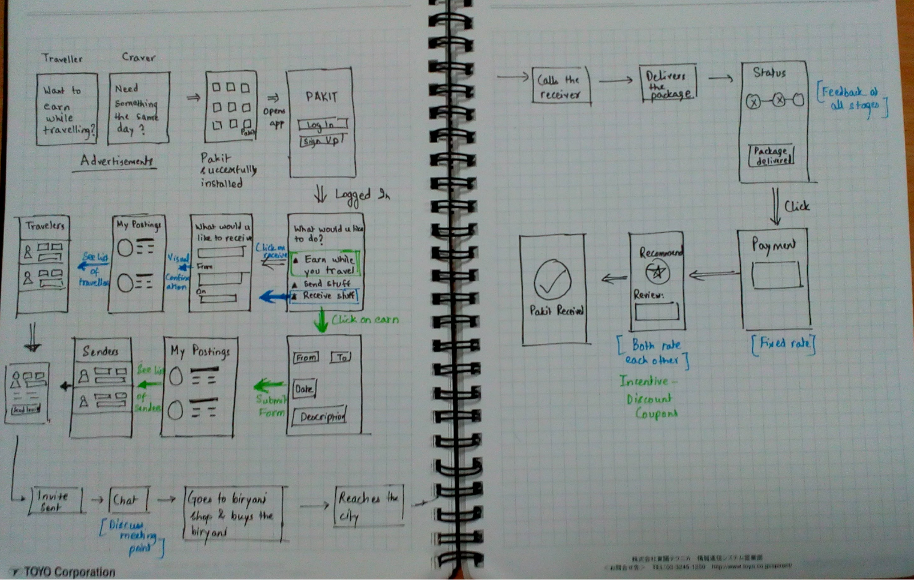I frequently referred to the user journey as low fidelity wireframes, as we had sketched out not only how a user would navigate the app, but also how the individual screens would look like.
Wireframes
After the user journey was designed, the wireframes were a piece of cake. We just had to block space out, and place the elements carefully on the screen, to make everything legible and conforming to the conventional UI principles.
These are some of the wireframes we sketched out
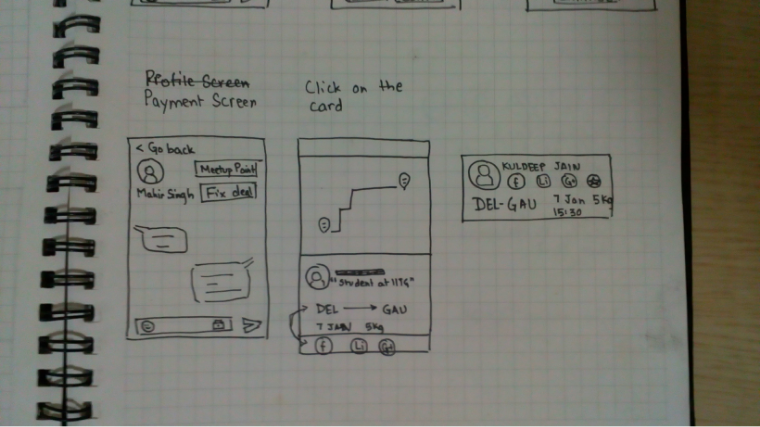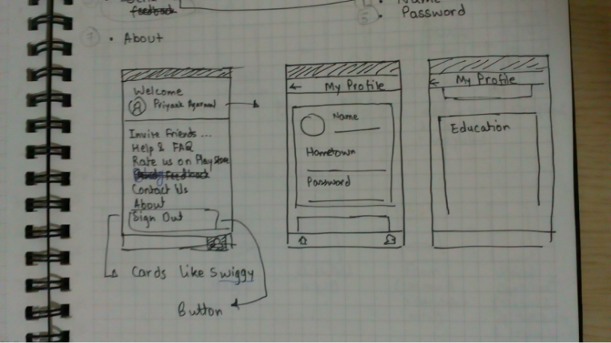
Visual Design
For deciding the colors and the typography for the app, we did a small research. Vidushi went to 5 participants and gave them some words related to travel, courier etc and some random words to eliminate the cognitive bias, and asked them to tell the colors that came to their mind on hearing the words.
The results were very similar. Most of the participants replied green and blue for the words relevant to us. Hence, we decided to go with a light green color, which would not only better define us, but also signify our growth and give a very calm and cool feeling to the users.
For the typography, Vidushi prepared some headings and text with different fonts, and the team sat down, and started eliminating fonts based on their legibility or aesthetics. After hours of debating, we finally locked Gotham as the font to use.
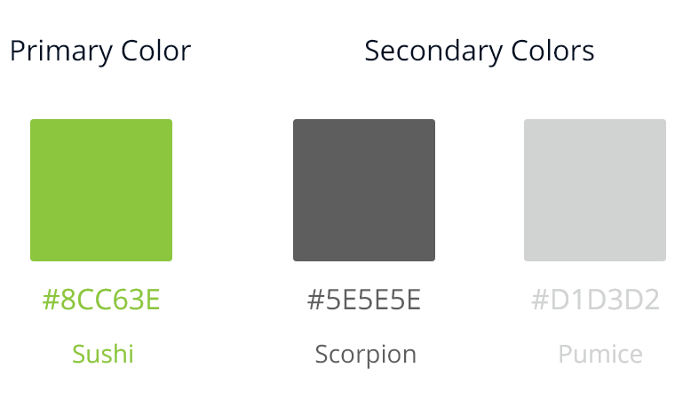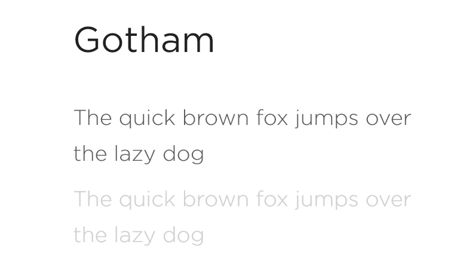
Branding
The first thing to take care of was the logo. We took help of Mehul Chaudhary to design our logo. The logo went through many iterations. We were clear from the beginning to use the Sushi color for the logo, as we had used for the interface.
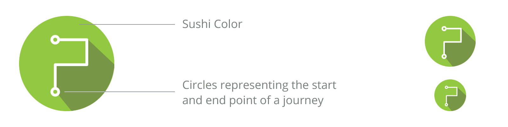After the logo was done, we started focussing on marketing. Since we were bootstrapping, Social Media and word-of-mouth marketing seemes the obvious way to pursue. We ran a few campaigns, to spread awaresness about the service, starting with our college.
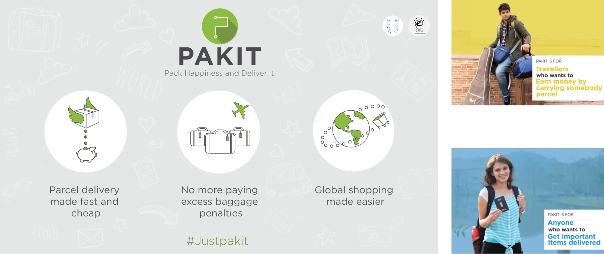We also released a few gifs, to increase the reach of the posts, and to get people excited about the service.
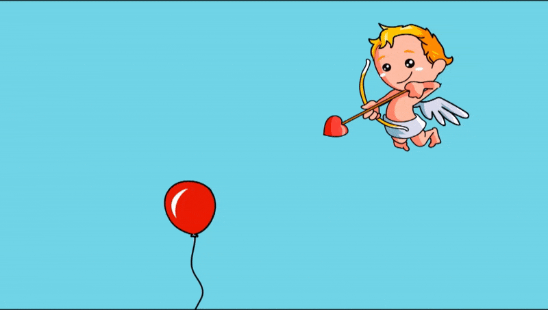

The posters and gifs were shared on facebook and twitter, and were well received. We started to create some hype in our college, and that helped us a lot in gaining attention.
Promotional Website
To get people start taking the startup seriously, we needed a promotional website, that would also act as a gateway for people to get to the app store. This might have been the fastest-moving project I've ever worked on. We built the website, from design to development in around 3 days. It was really fun to see the website pop into action.
Nitish Garg and Vedant Rathore were kind enough to help build the website.
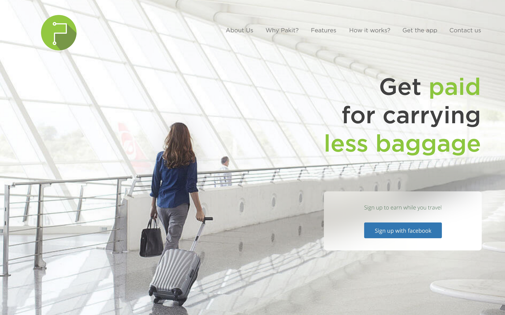This is the design of the landing page. We wanted to keep the landing page simple, and to get the attention of the visitors towards the Call-to-Action button, which at that time, was to get them connected via facebook.
Scrolling down revealed the features of the service and a link to download the android app. The website can be found here
The future
The first leg of the startup included launching the MVP android app, getting the name of Pakit in the market, first stage of marketing and also looking for potential investors. After a failed start, we realised that it had many security flaws, and we definitely needed an investment for the second phase.
I left the startup after the first phase to focus on other things. Since then, Kuldeep and the team have been working hard for the second phase and plan to improve the UX of the app, relaunch the website and also develop a web version of the app.
Learnings
It was a very spontaneous decision to get associated with the startup, since startups require much commitment in terms of time and work. But I don't regret a single moment. It was really fun collaborating with like-minded people and trying to create a small dent in the universe.
I learnt many lessons in Team management, Enterprise UX, Networking, Pitching, Growth hacks, marketing and Intellectual property to name a few. I learnt what it takes for a startup to fail, and how the team is the most important part. I learnt how much motivated the cofounders have to remain, for a startup to flourish. I learnt how miscommunication can have an adverse effect. I learnt how problems have to be solved on the spot. I learnt how having a bird eye's view is necessary. Most of all, I learnt how I could not justify my co-founder status, and how I'm going to tackle it, should I be indulging in another venture.
Overall, it was one of the best phases of my life, and I don't think I've ever learnt so much in so little timeframe. I had the best team and the best co-founder.
Thank you!